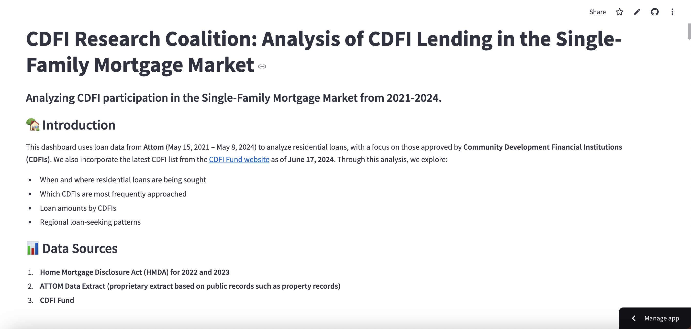

Projects
CDFI Research Coalition: Analysis of CDFI Lending in the Single-Family Mortgage Market
This dashboard uses loan data from Attom (May 15, 2021 – May 8, 2024) to analyze residential loans, with a focus on those approved by Community Development Financial Institutions (CDFIs). We also incorporate the latest CDFI list from the CDFI Fund website as of June 17, 2024. Through this analysis, we explore:
- When and where residential loans are being sought
- Which CDFIs are most frequently approached
- Loan amounts by CDFIs
- Regional loan-seeking patterns

View Dashboard